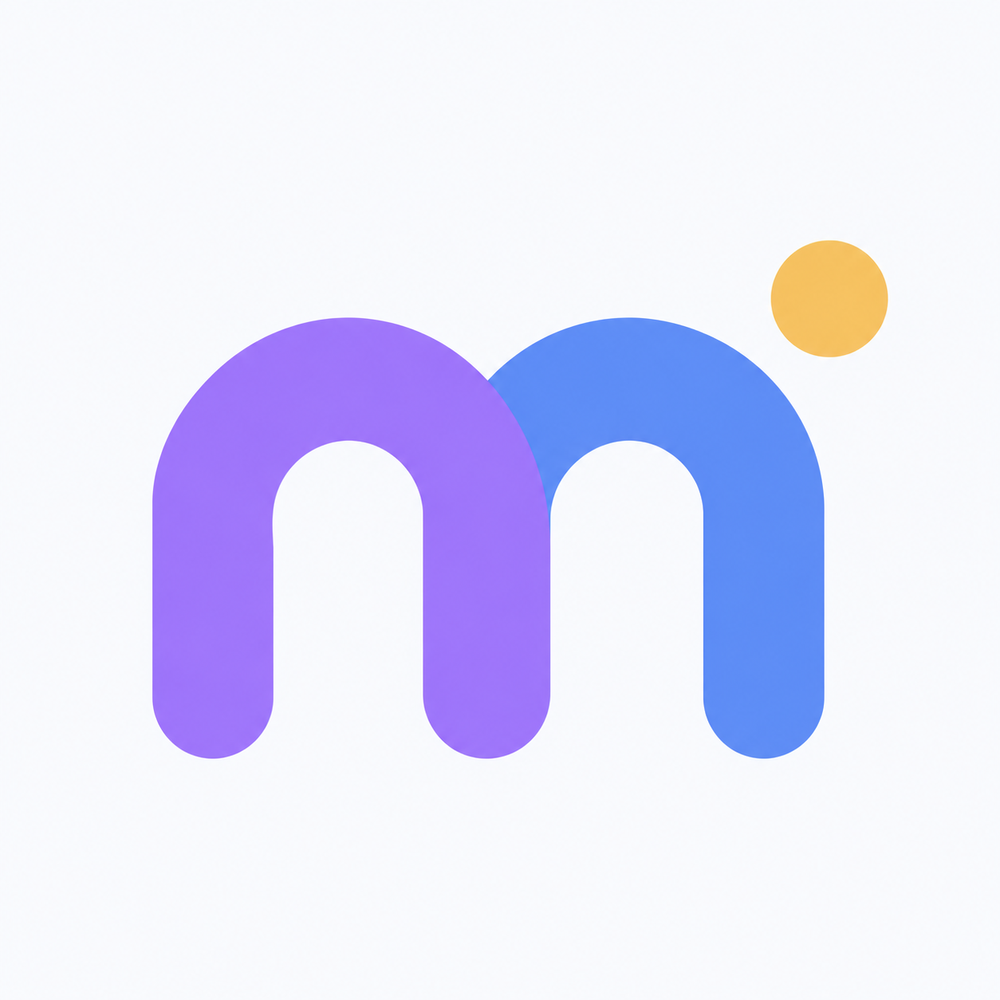

<!doctype html>
<html lang="zh-CN">
<meta charset="utf-8">
<meta name="viewport" content="width=device-width,initial-scale=1">
<title>MyLifeOS · 应用图标</title>
<link rel="icon" type="image/png" href="mylifeos-icon-v1.png">
<style>
*{box-sizing:border-box}body{margin:0;background:#f1f1f2;color:#202124;font:15px/1.6 "Segoe UI","Microsoft YaHei",sans-serif}main{max-width:980px;margin:0 auto;padding:54px 32px}header{margin-bottom:32px}h1{font-size:24px;font-weight:600;margin:0 0 6px;letter-spacing:-.5px}p{margin:0;color:#6d7179}.layout{display:grid;grid-template-columns:1fr 1fr;gap:24px}.panel{border-radius:28px;padding:32px;background:#fff;min-width:0}.hero{display:block;width:100%;max-width:320px;margin:auto;border-radius:23%}.label{font-size:12px;color:#7c828a;letter-spacing:1px;margin-bottom:24px}.sizes{display:flex;align-items:end;gap:32px;min-height:104px}.sample{display:grid;justify-items:center;gap:14px;color:#7c828a;font-size:12px}.sample img{display:block;border-radius:23%}.dark{background:#20242d;margin-top:28px;border-radius:20px;padding:28px;display:flex;gap:28px;align-items:center;color:#e5e7eb}.dark img{width:64px;height:64px;border-radius:23%}.dark p{font-size:13px;color:#b5bbc5}.description{font-size:14px;margin-top:26px;line-height:1.9;color:#6d7179}.palette{display:flex;gap:10px;margin-top:22px}.palette i{display:block;width:20px;height:20px;border-radius:50%}@media(max-width:650px){main{padding:30px 20px}.layout{grid-template-columns:1fr}.panel{padding:24px}}
</style>
<main>
<header><h1>MyLifeOS</h1><p>习惯 · 计划 · 专注</p></header>
<div class="layout">
<section class="panel"><div class="label">应用图标</div></section>
<section class="panel"><div class="label">小尺寸识别</div><div class="sizes">
<div class="sample"><span>32 px</span></div>
<div class="sample"><span>48 px</span></div>
<div class="sample"><span>64 px</span></div>
</div><div class="dark"><div>MyLifeOS<p>深色背景示意</p></div></div>
<p class="description">用相连的圆角时间块组成 m，让习惯、计划与专注形成有节奏的日常。黄色圆点为平静的蓝紫主体增加一个清晰的视觉重心。</p>
<div class="palette" aria-label="应用配色"><i style="background:#9d7bf5"></i><i style="background:#5b8def"></i><i style="background:#9ab8db"></i><i style="background:#f2c46d"></i></div>
</section></div>
</main></html>
